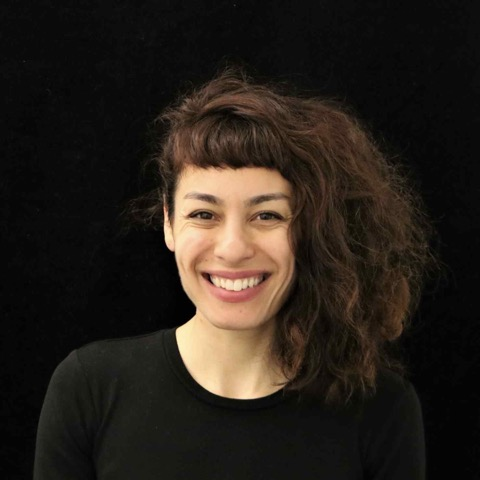

How can generative models become generative motor programs that obey physical constraints?
The 1st Embodied4Arts Workshop @ RSS 2026
Robots as Creative Partners for Artistic, Expressive, and Craft Tasks
Embodied4Arts welcomes work at the intersection of robotics and the arts: robots that paint, draw, perform, sculpt, craft, compose, fabricate, collaborate, or otherwise participate in creative practice.
2026 Best Paper announced.
HDR receives the Best Paper Award of the 1st Embodied4Arts Workshop at RSS 2026.

2026 Best Paper Award
HDR: Hierarchical Denoising for Multi-Step Visual Reasoning and Robotic World Action Modeling
The organizing committee recognizes HDR for connecting hierarchical multi-step visual reasoning with robotic world-action modeling, including a physical brush-painting demonstration that turns evolving visual plans into creative robot behavior.
Date
July 17, 2026
Time
Morning half-day, 8:30 AM-12:30 PM AEST
Location
UTS Building 11, CB11.03.301
Format
Half-day RSS workshop
Submission Portal
OpenReview venue
Contact
yanjia@ucla.edu
Overview
Why Creative Embodiment?
Robotics is entering an era of foundation models and data-driven policies, but many benchmarks still reward narrow task completion. Artistic and craft practices expose a richer set of requirements: contact-rich tool use, deformable materials, timing, expressive control, subjective human evaluation, authorship, and cultural context.
In these settings, small modeling errors leave visible traces. A robot painting a line, folding cloth, carving a form, dancing with a human, or performing music must be physically grounded, controllable, and expressive. Embodied4Arts brings together robotics, the arts, HRI, robot learning, manipulation, control, world models, graphics, fabrication, and creative AI to discuss systems and ideas that move beyond benchmark chasing.
Motivating Questions
What should creative robots be able to learn, plan, and explain?
What metrics capture style, expressivity, preference, and authorship beyond success or pixel similarity?
How can robots imagine creative outcomes while maintaining contact, material, and safety validity?
How should human feedback guide creative robots without collapsing artistic agency into optimization alone?
Areas of Interest
Workshop Themes
Painting and Drawing as Programs
Converting intent from text, image, or sketch into executable stroke programs under tool, surface, and motion constraints.
- Stroke planning and macro-actions
- Verification-aware decoding
- Metrics for style and efficiency
Embodied Music and Expressive Control
Modeling timing, dynamics, articulation, compliance, and co-performance rather than note correctness alone.
- Expressive performance policies
- Audio-visual feedback for control
- Human-aligned performance ratings
Deformables and Computational Craft
Learning and planning for folding, weaving, sewing, knotting, draping, and fabrication-aware manipulation.
- World models for deformable dynamics
- Long-horizon structured planning
- Reproducible craft benchmarks
Speaker Updates
Confirmed Speakers and Remote Invited Talks
Confirmed remote talks are being coordinated around the RSS half-day schedule and speaker time zones.
Jean Oh
Carnegie Mellon University
Creative physical AI, FRIDA/CoFRIDA, vision-language planning for robotics
Patricia Alves-Oliveira
University of Michigan
Artist-robot collaboration, HRI, human-centered embodied AIAmy LaViers
The Robotics, Automation, and Dance Lab
Robotics and dance, choreographic movement, expressive embodied systemsPedro Lopes
University of Chicago
Human-computer integration, embodied interfaces, haptics and interactive devicesAdditional invited speakers will be announced after availability is confirmed.
Program
Final Half-Day Schedule
Opening remarks: workshop scope, poster themes, and remote participation setup
Invited talk: Patricia Alves-Oliveira, artist-robot collaboration and creative HRI (remote)
Poster teaser session: accepted posters and community introductions
Coffee break and poster session outside the workshop room
Invited talk: Jean Oh, creative physical AI and robot painting
Invited talk: Amy LaViers, robotics, dance, and expressive embodied systems (remote)
Invited talk: Pedro Lopes, human-computer integration and embodied interfaces (remote)
Contributed lightning talks
Organizer-led community discussion and audience Q&A
Poster discussion, breakout reflections, and community next steps
Closing and community next steps
All times are local to Sydney, Australia (AEST). Remote invited speakers join only for their scheduled talk and Q&A. Venue: UTS Building 11, Level 3, Room 301 (CB11.03.301), 81 Broadway, Ultimo NSW 2007. The room is a cluster classroom with capacity 91; poster boards will be available outside the workshop room.
Workshop Contributions
Poster Submissions Are Closed
The first Embodied4Arts workshop welcomed non-archival poster contributions on robotics and the arts, including extended abstracts, video demos, systems, methods, position papers, design studies, creative practice reports, negative results, and early-stage ideas.
Accepted submissions were presented as posters and lightning talks at RSS 2026. The workshop emphasized artistic, robotic, and human-centered insight beyond leaderboard improvement alone.
Priority Deadline
July 3, 2026
Final Deadline
July 10, 2026
Workshop
July 17, 2026
Poster Submission
- Extended abstract: 1-2 pages
- Video demo: 2-3 minutes plus 1-page summary
- Accepted entries will be invited for posters; selected entries may receive spotlight talks
Review Criteria
- Relevance to robotics and the arts
- Artistic, robotic, or human-centered insight beyond leaderboard improvement alone
- Clarity, originality, feasibility, and community value
Important Dates
- Submissions open: June 3, 2026
- Priority poster deadline: July 3, 2026
- Late-breaking poster deadline: July 10, 2026
- Notifications: rolling, with final notifications after July 10
- Workshop: July 17, 2026, morning half-day